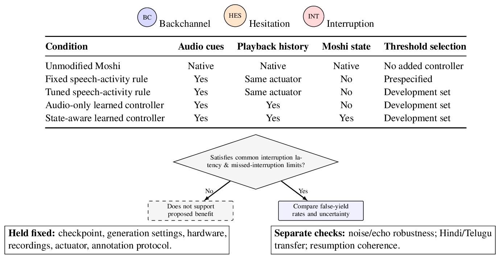

Proposal: generation-state-aware yielding
The proposed improvement: a small causal controller on frozen Moshi that reads the model's own generation state to decide continue, hold or yield, specified as an experiment that could fail.
The failure it targets
A speech-activity rule ("stop when the user starts making sound") can treat a listener's "mm-hm" as an attempt to take the floor. That is a hypothesized baseline failure, not an established failure of either paper's model. The proposal asks whether the speech LLM's own internal state tells the two cases apart better than audio and playback cues alone.
Hypothesis and refutation
Hypothesis A frozen speech LLM's own generation state improves continue/hold/yield decisions beyond incoming audio and observable playback history. It predicts fewer false yields on eligible backchannel and hesitation events than speech-activity rules and an audio-only learned controller, under matched interruption-to-yield latency and missed-interruption constraints.
Refuted if the state-aware controller cannot improve that constrained comparison on held-out speakers and conversations, or if removing generation state preserves the benefit.
Four secondary alternatives remain open: whether buffering dominates onset latency, whether codec phonetic quality predicts interaction accuracy, whether limited lookahead causes prosodic commitment errors, and whether real overlapping dialogue contributes beyond synthetic conversation training.
The controller
Attach a small causal controller to frozen Moshi. The base model's parameters never change.
Inputs (decision-time only)
- Current Mimi representations and causal speech-activity features.
- Observable assistant playback activity, elapsed activity and silence durations, queue occupancy.
- Generation-state additions: Moshi's Temporal Transformer context vector and the self-text PAD probability (M §3.4.1, pp.13-14; §3.4.4, pp.16-17).
Only values available at decision time may enter. Future audio or future generated text must never be a feature (it may inform labels only).
Actions
| Action | Effect |
|---|---|
| continue | Release available audio. |
| hold | Briefly suspend release while listening continues. Duration is capped on development data; excessive holding counts as disruption, not as a successful non-yield. |
| yield | Suppress output and clear pending playback while listening continues. Playback resumes only through a later controller decision. |
All actions go through one bounded playback actuator. A learned projection plus a recurrent classifier produces the action. The actuator controls the queue-to-speaker path only; it must never interrupt the incoming-audio path.
The contribution under test is the use of generation state, not turn-taking prediction itself.
Training and labeled data
- Train only the projection and classifier, with supervised action cross-entropy.
- Labels: event type, floor ownership, event onset, acceptable action intervals, interruption-response deadlines. Annotators hear the surrounding dialogue and mark ambiguity independently of controller output.
- Data: consented human-Moshi conversations plus controlled reenactments, recorded as separate user and actually-played-assistant channels, then replayed through frozen Moshi for causal feature traces. Fisher's separate channels are a possible auxiliary source for human conversational cues (M §4.2, p.18); new action annotations and human-system validation are still required.
- Split by speaker, conversation and scenario. Keep disagreement scores for sensitivity analysis. Choose class weights, thresholds and hold limits on development data only; leave the test set untouched.
- Include logged policy rollouts, not only reenactments, so training sees the controller's own action histories.
Experimental design
| Condition | Audio cues | Playback history | Moshi generation state | Thresholds |
|---|---|---|---|---|
| Unmodified Moshi | Native | Native | Native | No added controller |
| Fixed speech-activity rule | Yes | Same actuator | No | Prespecified |
| Tuned speech-activity rule | Yes | Same actuator | No | Development set |
| Audio-only learned controller | Yes | Yes | No | Development set |
| State-aware learned controller | Yes | Yes | Yes | Development set |
Winning only against the fixed rule would not show a generation-state benefit; the tuned rule and the audio-only learned controller exist to rule out calibration and "any learned classifier helps" explanations.

Primary metric and constraints
Events are matched backchannel, hesitation-pause and genuine-interruption scenarios, balanced across speakers and recording conditions. Floor intent is inferred from context, not from event duration alone. Completed questions are an endpoint sanity check outside the primary comparison.
false-yield rate = (events with an inappropriate yield or excessive hold)
/ (eligible floor-retention events)
primary metric = unweighted mean of the backchannel and hesitation false-yield rates
(both also reported separately, with denominators)
missed-interruption rate = (genuine interruptions without timely playback cessation)
/ (genuine interruptions)- Interruption-to-yield latency: from annotated interruption onset to actual playback cessation, including queued audio and actuator delay. Failure to yield within the annotated deadline is a miss. Report latency distributions together with misses, never successful responses alone.
- Common limits: operating points are compared only under shared limits on latency and missed-interruption rate, set from development-set baseline behavior before testing. If no operating point meets both, the benefit is unsupported.
- Uncertainty: estimated by resampling conversations, preserving within-dialogue dependence.
- Also published: eligibility denominators, premature starts during user-owned hesitation, and unnecessary hold time.
Ablation, robustness and controls
- Diagnostic ablation: remove generation-state features but keep acoustic features, playback history, queue state, classifier capacity and training budget. If the benefit survives, the proposed contribution is rejected even if the controller still beats the rule. Report any parameter-count difference from the input projection.
- Robustness: repeat held-out events under identical noise and echo perturbations. Report activity-detection errors and controller errors separately.
- Indic transfer: a Hindi/Telugu subset with fluent annotators and per-language agreement. Evaluate zero-shot transfer before any adaptation and report the two separately. Do not assume either base model fails on Indic speech, and report basic instruction comprehension so lexical misunderstanding is not blamed on yielding.
- Held fixed: checkpoint, generation settings, hardware, recordings, playback mechanism, annotation protocol.
Replay vs. interactive evaluation
For immediate-action comparisons, start every system from a common assistant prefix and replay the same user event, so differences are not blamed on different user recordings. Replay cannot reproduce how people react to different assistant actions, so follow-up live trials with counterbalanced order must assess resumption coherence and dialogue drift. The two kinds of outcome are reported separately and never merged into one causal claim.
Threats to validity
| Threat | Mitigation in the design |
|---|---|
| Generation state encodes only timing or speaker identity | Playback history and durations supplied to both learned variants; speaker-disjoint splits |
| Threshold tuning explains the gain | The development-tuned rule baseline |
| Extra waiting, not better decisions, lowers false yields | Common latency limits and explicit hold accounting |
| Scripted cues explain the performance | Natural held-out conversations |
| Dialogue drift: Moshi can internally generate speech that suppression stops the user hearing | Freezing the model does not repair its internal dialogue state. Track unheard output, resumption coherence, truncation and controller overhead as follow-up outcomes. Failure there limits deployment even with a good primary metric. |
Open items to verify before running
- Whether an implementation exposes the causal Mimi representations, temporal context and PAD probabilities, and what Moshi's state does when generated audio is suppressed from playback.
- Fisher access and permitted use before selecting it as an auxiliary annotation source.
- Controller and feature-extraction overhead, and audible discontinuities after suppression and resumption. "Lightweight" is a design target until measured.
- Novelty: whether prior systems already use a speech generator's hidden state for conversational action selection. TurnGPT (text-based turn-taking prediction) and Voice Activity Projection (audio-based voice-activity prediction) show turn prediction predates this proposal. No priority claim is made.